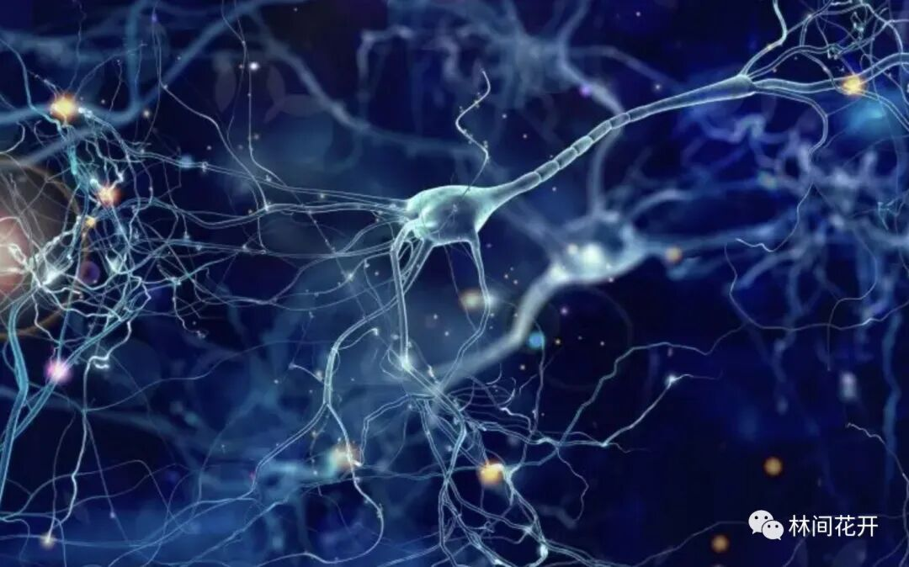

学习不靠天赋，靠正确的方法

（来自网络）
中午剪头发，碰到一位因疫情从北京回来的大一学生，跟他聊起学习。他说高中三年最轻松，老师好不好不影响学习，完全靠自学。问他如何自学。
他讲了几个学习策略：提前预习课本、在测试中查缺补漏、看会书玩一会再来刷会题、睡前回顾.....他提到的这些方法，跟我之前看的「认知天性」一书提到的学习策略，有异曲同工之处。今天就来分享这本书的学习方法。
1
多年前朋友发了樊登读书会的链接，推荐「认知天性」一书，以为是一本鸡汤类的畅销书，速速翻完扔在一边。直到开智的「人生资本」课选了这本书，再次重刷。
「认知天性」集结了11位前沿认知科学家。他们花了10年科研心血，从脑神经科学研究成果中，提炼出一套利于大脑学习的学习指南。这本书在亚马逊认知心理学分类榜首蝉联4年，可见它受欢迎程度。
三位作者中，亨利.L.罗迪格三世和马克.A.麦克丹尼尔都是美国认知心理家，他们是华盛顿大学路易斯分校心理学教授，以研究记忆机制闻名。两人在华盛顿大学发起项目「应用认知心理学加强教育实践」。
项目获得成功后，他们想把研成果推广到教育课堂上，联合了善于写科普的作家彼得.C.布朗，书中的第三位作者。三人合力完成了「认知天性」这本面向大众的书。
跟其他如何学习的书籍有所不同。「认知天性」基于大量的实证科学，统计方法写成的一本如何科学学习的书。书中的大部分例子来自于认知科学家做过的实验。
这些实验中不少反常识点：考试是有效的学习策略，比反复阅读、划线、课上边听边记、考前突击的学习效果更好。学一个主题不如多学几个，分散学习时间，大脑更记得住。
如何有效学习？书中反复提到检索练习、穿插练习、多样化练习、生成、细化等，具体来看看。
2
先看看检索练习。其实就是测验，从小考到大的考试，这个概念由心理学家威廉.詹姆斯提出。在学完知识后，给自己一次测试，效果会比反复阅读好，记得也更牢。
来看书中的一个实验，看看检索学习带来的改变。实验中，让学生记住故事中的60个实物的名称，看哪组记得更好。
第一组学生接触完实物名称后，立刻参加测验，他们可以记住53%的内容。一周后再测，还能回忆起39%的内容。
第二组学生参加同样的内容学习，但不参与测验，一周后只能回忆起28%的内容。第一组与第二组相比，只参加一次测验，回忆率从28%上升到39%。
还有一组学生，跟前两组一样，学习同样的内容，不同的是，他们立刻做了三次测验。一周后回忆起53%的内容，结果上看，比第一组只参加一次测验的表现要好，回忆率从39%上升到53%。
实验结果表明，测验确实是一种有效的学习方法，多次测验比一次检索的表现要好，记忆知识更多；一次测验比不测验的表现要好。从认知科学上看，测验是一种主动学习的方式，符合大脑记忆原理。给大脑的挑战越大，回忆的难度就越大，提取知识就更难，但越回忆，就越能巩固知识，识别出掌握了哪些，没掌握哪些。
正如亚里士多德所说：“反复回忆一件事情可以增强记忆。”
再看传统的学习方法，反复阅读、划线、考试前集中突周、上课边听边记，看似有效，实则无效。学中轻松顺畅，没有给大脑制造困难，学过就忘。前几年买了好几个得到的课，听时很爽，以为自己都懂了，听后全忘光。
书中还提到，如果把一次学习分成几个时间段，也就是间隔时间检索，效果会更好，比如，在阅读一本书前，先想想这本书的核心观点是什么，有哪些反常识，有哪些术语。去玩一会，再带着预设问题阅读。合上书后，问自己，记住了哪些，你认同这个观点吗，你会如何应用到生活中。隔几小时后或是隔天，输出卡片和笔记，对这本书，你会记得更牢。
有了检索的策略后，我给小孩讲绘本时，一改过去我讲她听的模式。翻绘本前，我会指引她看封面和书名，跟她一起猜猜绘本讲什么。看到她有兴趣的，以提问引导她思考。看完书，跟她一起回忆绘本的内容。并跟两个娃说，以后每天晚上三人轮流讲故事，不限内容不限字数，可编可看完绘本再讲。运行了两周，效果不错，我每晚讲故事的时间少了，娃讲故事的时间多了，锻炼了她们的复述能力，故事越讲越多。
检索练习让我想到认知科学家约翰.安德森在「认知心理学及其启示」一书中提到的阅读方法PQ4R（每个单词的首字母缩写），分别是预习、提问、阅读、反思、复述、复习。每一个环节都可看成给大脑的一次测验，学习越主动，学得就更好。
3
如果在学习中加入两个以上的主题或技能，效果胜过填鸭式的集中学习。这种方法称为穿插练习。
看一实验，两组学生按照题目要求计算四种少见的几何体的体积（楔体、椭球体、锥球体和半锥体）。
第一组，按照四种几何体分类，先计算四道楔体的体积，接着再算四道椭球体的体积，以此类推，最后做完四类几何体的体积。
第二组，题目一样，只是混合计算几何体的体积（穿插安排），比如在解楔体的体积时，不按顺序做完楔体的体积，穿插计算其他几何体。
结果表明，按照统一题型解答（集中练习）的平均正确率为89%，混合练习（穿插）的平均正确率是60%。只看这两个数字，你会说，集中练习的效果更好。且慢，一周后的最终测验上，第一组学生，平均正确率只有20%，第二组学生，平均正确率在63%，比第一组高出215%。
相比穿插练习，集中练习容易给造成你已经学会的感觉，这是一种错觉，可以说是「假装性学习」，短期内记得住，一旦要提取，提取不出来。
穿插学习实际上是间隔练习的一种，把时间分散到不同的主题学会上，有利于你的大脑主动辨别问题的能力，还能培养你不断从解决方案中寻找出合适工具的能力，虽然没有集中学习立竿见影的效果，但从认知科学研究上看，不管是记住知识还是提取，穿插练习远比机械式的集中练习更有好。
如何在生活中应用穿插练习？
掌握了穿插练习这一方法后，每天早上不再只抱着一本书看，而是放置多种书，交错阅读。或是抽样完一本，去做点别的事，再接着看，或者是写写卡片，在阅读中穿插不同的事情。
用穿插学习法检验我家大宝的羽毛球教练是不是一位好教练？一周一次两小时的羽毛球训练，每次固定练习一个动作，比如发球，或是挥拍，或是接球，一个动作练得差不多后，才会练习下一个动作。明显这种教习方式不是最有效的，更好的是，在两个小时，多个动作穿插练习，比如30分钟练发球，30分钟挥拍，30分钟网前接小球，每周最好来一次测验，与小朋友计分对打，在打球中提取练习内容。
分散精力练习不同技能，要比一次掌握一个技能效果更好。一周内可能看不出优势，一周后或是多周后，学习会有全面的进步。
4
最近买了个小沙包，让娃在家练习。如果你来教，你会如何教她扔沙包？
我从「多样化练习」中得到启发，要教小孩扔不同距离的沙包，比如练习1米、2米、3米三种距离，都要练习，这种学习方法称为多样化学习。
研究表明，进行不同种类的练习，使用到大脑的不同区域，要比集中练习的挑战更大。多样化练习对应的是段落学习，按顺序学习。从前面的检索练习、穿插练习可以知道，学习不是一件轻松的事，大脑越是费力，学习效果越好，如书中所说：
相比之下，多样化、难度更高的练习需要耗费更多脑力，通过这种方式学到的东西会被大脑编成更灵活的表征，适用范围也会更广。
这不禁让我联想到阳老师提到的「抽样阅读法」。阅读不应像时钟一样，只按一个顺序走，更有效的阅读：先看书的边角料（封面封底、前言后序、推荐语、目标等），或是查阅作者的背景，他研究的领域是什么，擅长什么，再从书中抽样出核心的内容，打乱阅读从头一字不漏看到尾的习惯。抽样阅读不仅是多样化练习的一种策略，还符合大脑「爱脑补」的工作原理，掌握一本书20%的精华，其他的就留给大脑去补上。
回到开头的提到的那个大一学生，他说地理课几乎自学，老师在讲课，他带电脑在看纪录片（学校允许带电脑），每次考试满分，这得益于他的多样化学习。
多样化练习还可应用在写文章上。写完卡片拼接全文，无需从第一张到第二张，再到第三张，按顺序拼接。打乱顺序，既可以从第一张拼起，也可从最后一张拼起。自由组合，反而能产生创意。
书中还提到，制造「良性干扰」对学习也有帮助。不给小孩看全文，去掉文中的一些内容，让她填空（完型填空），反而能更记住全文。还有设计教学大纲不用跟课本的顺序走，不一致的内容编排，学生需要花点功夫一一反应起来，他们更能记住内容。
两篇文章，一篇是排版正常字体清晰，一篇是排版有点乱字体模糊，你更能记住哪篇？看完「认知天性」这本书，相信你会答案。
小结
万千智慧始于记忆——埃斯库罗斯，「被缚的普罗米修斯」
学习是什么？古严教练的一句话启发了我：
学习就是以各种方式，改变我们的大脑与身体的生理结构与机能、改变神经元的联结模式，达到改变我们大脑的激活模式。
我们大脑有数千上亿个神经元，知识与知识相互联系，激活了一个节点，另一个节点也会给激活，学习的过程就是建立知识网络的过程。
从这点上看，与其说《认知天性》是一本如何有效学习的书，不如说这是一本讲如何强化大脑神经元之间的联结。
ref 「美] Peter C. Brown / [美] Henry L. Roediger III / [美] Mark A. McDaniel「认知天性」；开智「人生资本课」
20220627